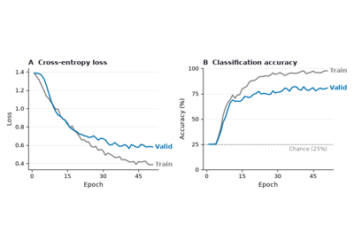

braindecode.preprocessing.EEGPrep#
- class braindecode.preprocessing.EEGPrep(*, resample_to=None, flatline_maxdur=5.0, highpass_frequencies=(0.25, 0.75), bad_channel_corr_threshold=0.8, burst_removal_cutoff=10.0, bad_window_max_bad_channels=0.25, bad_channel_reinterpolate=True, common_avg_ref=True, bad_channel_max_broken_time=0.4, bad_channel_hf_threshold=4.0, bad_window_tolerances=(-inf, 7), refdata_max_bad_channels=0.075, refdata_max_tolerances=(-inf, 5.5), num_samples=50, subset_size=0.25, bad_channel_nolocs_threshold=0.45, bad_channel_nolocs_exclude_frac=0.1, max_mem_mb=64)[source]#
Preprocessor for an MNE Raw object that applies the EEGPrep pipeline. This is based on [Mullen2015].

This pipeline involves the stages:
DC offset subtraction (
RemoveDCOffset)Optional resampling (
Resampling)Flatline channel detection and removal (
RemoveFlatChannels)High-pass filtering (
RemoveDrifts)Bad channel detection and removal using correlation and HF noise criteria (
RemoveBadChannelswith fallback toRemoveBadChannelsNoLocs)Burst artifact removal using ASR (Artifact Subspace Reconstruction) (
RemoveBursts)Detection and removal of residual bad time windows (
RemoveBadWindows)Optional reinterpolation of removed channels (
ReinterpolateRemovedChannels)Optional common average referencing (
RemoveCommonAverageReference)
These steps are also individually available as separate preprocessors in this module if you want to apply only a subset of them or customize some beyond the parameters available here. Note that it is important to apply them in the order given above; other orderings may lead to suboptimal results.
Typically no signal processing (except potentially resampling or removal of unused channels or time windows) should be done before this pipeline. It is recommended to follow this with at least a low-pass filter to remove high-frequency artifacts (e.g., 40-45 Hz transition band).
The main processing parameters can each be set to None to skip the respective stage (or False for boolean switches). Note this pipeline will only affect the EEG channels in your data, and will leave other channels unaffected. It is recommended to remove these channels yourself beforehand if you don’t want them included in your downstream analysis.
Note
This implementation of the pipeline is best used in the context of cross-session prediction; when using this with a within-session split, there is a risk of data leakage since the artifact removal will be calibrated on statistics of the entire session (and thus test sets). In practice the effect may be minor, unless your downstream analysis is strongly driven by artifacts (e.g., if you are trying to decode eye movements or muscle activity), but paper reviewers may not be convinced by that.
- Parameters:
resample_to (
float|None) – Optionally resample to this sampling rate (in Hz) before processing. Good choices are 200, 250, 256 Hz (consider keeping it a power of two if it was originally), but one may go as low as 100-128 Hz if memory, compute, or model complexity limitations demand it.flatline_maxdur (
float|None) – Remove channels that are flat for longer than this duration (in seconds). This stage is almost never triggered in practice but can help with the occasional strange EEG configuration.highpass_frequencies (
tuple[float,float] |None) – Tuple of lower and upper bound of the transition band for high-pass filtering before processing. This means that full suppression will be reached at the lower bound, and the upper bound is where the passband begins.bad_channel_corr_threshold (
float|None) – Threshold for correlation-based bad channel detection. A good default range is 0.75-0.8. Becomes quite aggressive at and beyond 0.8; also, consider using lower values (eg 0.7-0.75) for <32ch EEG and higher (0.8-0.85) for >128ch.burst_removal_cutoff (
float|None) – Amplitude threshold for burst artifact removal using ASR (Artifact Subspace Reconstruction). This parameter tends to have a large effect on the performance of downstream ML. 10-15 is a good range for ML pipelines (lower is more aggressive); for neuroscience analysis, more conservative values like 20-30 may be better. The unit is z-scores relative to a Gaussian component of background EEG, but real EEG can be super-Gaussian, thus the large values.bad_window_max_bad_channels (
float|None) – Threshold for rejection of bad time windows based on fraction of simultaneously noisy channels. Lower is more aggressive. Typical values are 0.15 (quite aggressive) to 0.3 (quite lax).bad_channel_reinterpolate (
bool) – Whether to reinterpolate bad channels that were detected and removed. Usually required when doing cross-session analysis (to have a consistent channel set).common_avg_ref (
bool) – Whether to apply a common average reference after processing. Recommended when doing cross-study analysis to have a consistent referencing scheme.bad_channel_hf_threshold (
float|None) – Threshold for high-frequency (>=45 Hz) noise-based bad channel detection, in z-scores. Lower is more aggressive. Default is 4.0. This is rarely tuned, but data with unusual higher-frequency activity could benefit from exploration in the 3.5-5.0 range.bad_channel_max_broken_time (
float) – Max fraction of session length during which a channel may be bad before it is removed. Default is 0.4 (40%), max is 0.5 (breakdown point of stats). Pretty much never tuned.bad_window_tolerances (
tuple[float,float] |None) – (min, max) z-score tolerance for identifying bad time window/channel pairs. This typically does not need to be changed (instead one may change the max bad channels that cross this threshold), but different implementations use different values here. The max value is the main parameter, where EEGLAB/EEGPrep uses 7 while the original pipeline [1] used 5.5, and NeuroPype uses 6. Lower values are more aggressive. The min value is only triggered if the EEG data has signal dropouts (very low amplitude, e.g. due to something becoming unplugged) which is rare; some choices are (-inf, EEGPrep; -3.5, BCILAB; -4 NeuroPype).refdata_max_bad_channels (
float|None) – Same function as bad_window_max_bad_channels, but used only to determine calibration data for burst removal. Usually more aggressive than the former (0.05-0.1) to get clean calibration data. This can be set to None to skip this and force all data to be used for calibration.refdata_max_tolerances (
tuple[float,float] |None) – Same as bad_window_tolerances, but used only to determine calibration data for burst removal. Almost never touched, and defaults to a fairly aggressive (-inf, 5.5) to get clean calibration data.num_samples (
int) – Number of channel subsets to draw for the RANSAC reconstruction during bad channel identification. Higher can be more robust but slower to calibrate. Default is 50.subset_size (
float) – Size of channel subsets for RANSAC, as fraction (0-1) or count. Default 0.25. For higher-density EEG (e.g., 64-128ch), one can achieve somewhat better robustness to clusters of bad channels by setting this to 0.15 and increasing num_samples to 200.bad_channel_nolocs_threshold (
float) – A fallback correlation threshold for bad-channel removal that is applied when no channel location information is available. The value here typically needs to be fairly low, e.g., 0.45-0.5 (lower is more aggressive). Ideally you have channel locations so that this fallback is not needed.bad_channel_nolocs_exclude_frac (
float) – A fraction of most correlated channels to exclude in the case where no channel location information is available. Used to reject pairs of shorted or otherwise highly correlated sets of bad channels.max_mem_mb (
int) – Max memory that ASR can use, in MB. Larger values can reduce overhead during processing, but usually 64MB is sufficient.
References
[Mullen2015]Mullen, T.R., Kothe, C.A., Chi, Y.M., Ojeda, A., Kerth, T., Makeig, S., Jung, T.P. and Cauwenberghs, G., 2015. Real-time neuroimaging and cognitive monitoring using wearable dry EEG. IEEE Transactions on Biomedical Engineering, 62(11), pp.2553-2567.
Methods
Examples using braindecode.preprocessing.EEGPrep#

Cleaning EEG Data with EEGPrep for Trialwise Decoding